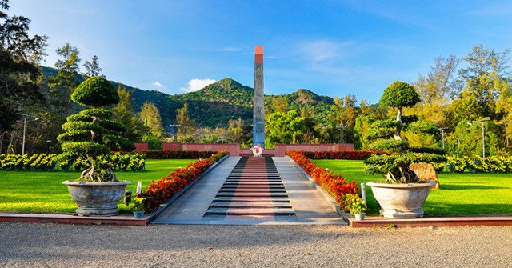

Thông Tin Tour
Giá: 5,890,000 VND
Ngày đi: 20/12/2024
Phương tiện: Máy bay lượt đi + khứ hồi và xe di chuyển tại địa phương.
Thời gian: 3 ngày 2 đêm
Giới thiệu: Tour viếng Nghĩa trang Hàng Dương, tham quan nhà tù Côn Đảo, và trải nghiệm biển xanh hoang sơ.
Lịch Trình Tour
- Ngày 1: Viếng nghĩa trang Hàng Dương, tham quan nhà tù.
- Ngày 2: Khám phá bãi Đầm Trầu, tự do tắm biển.
- Ngày 3: Tham quan các điểm còn lại và trở về.
Điểm Tham Quan Nổi Bật
-  Nghĩa trang Hàng Dương
- Nhà tù Côn Đảo: Một trong những di tích lịch sử nổi tiếng còn sót lại từ thời kỳ chiến tranh chống giặc ngoại xâm của dân tộc Việt Nam.
- Biển hoang sơ: Với những bãi tắm hoang sơ tuyệt đẹp, làn nước trong xanh mát lạnh, bãi cát dài phẳng mịn.
Ẩm Thực Đặc Sắc
Tour sẽ giới thiệu đến du khách các món ăn nổi tiếng của Côn Đảo:
- Hải sản tươi sống: Với nhiều đặc sản có thể thưởng thức tại chỗ và mua về làm quà khi đi du lịch.
- Bánh xèo hải sản: Có vỏ mỏng, giòn tan, to như bánh xèo miền Nam.
Phương Tiện Di Chuyển
Du khách có thể lựa chọn:
- Máy bay lượt đi + khứ hồi vô cùng tiện nghi.
- Xe limousine sang trọng, thoải mái.